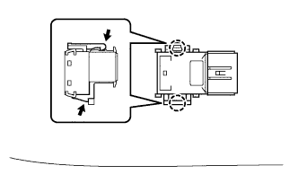
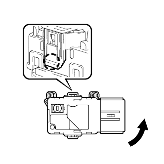
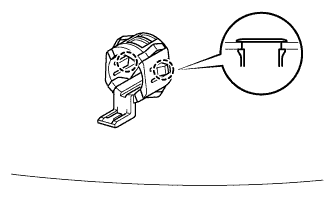
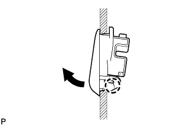

ULTRASONIC SENSOR (for Rear) > REMOVAL |
| 1. REMOVE REAR BUMPER COVER |
for Standard:
Remove the rear bumper cover (Click here).
w/ Towing Hitch:
Remove the rear bumper cover (Click here).
w/ Pintle Hook:
Remove the rear bumper cover (Click here).
| 2. REMOVE NO. 2 FRAME WIRE |
for Standard:
Remove the No. 2 frame wire (Click here).
w/ Towing Hitch:
Remove the No. 2 frame wire (Click here).
w/ Pintle Hook:
Remove the No. 2 frame wire (Click here).
| 3. REMOVE NO. 2 ULTRASONIC SENSOR |
 |
While pushing down on the lever with a finger to release the one claw, detach the claw on the other side to remove the ultrasonic sensor.
| 4. REMOVE NO. 3 ULTRASONIC SENSOR |
 |
Detach the claw and remove the ultrasonic sensor as shown in the illustration.
| 5. REMOVE NO. 2 ULTRASONIC SENSOR RETAINER |
 |
Detach the 2 claws and remove the ultrasonic sensor retainer from the rear bumper cover.
| 6. REMOVE NO. 3 ULTRASONIC SENSOR RETAINER |
 |
Detach the claw and remove the ultrasonic sensor retainer from the rear bumper cover.